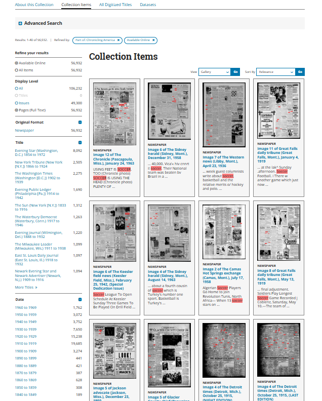
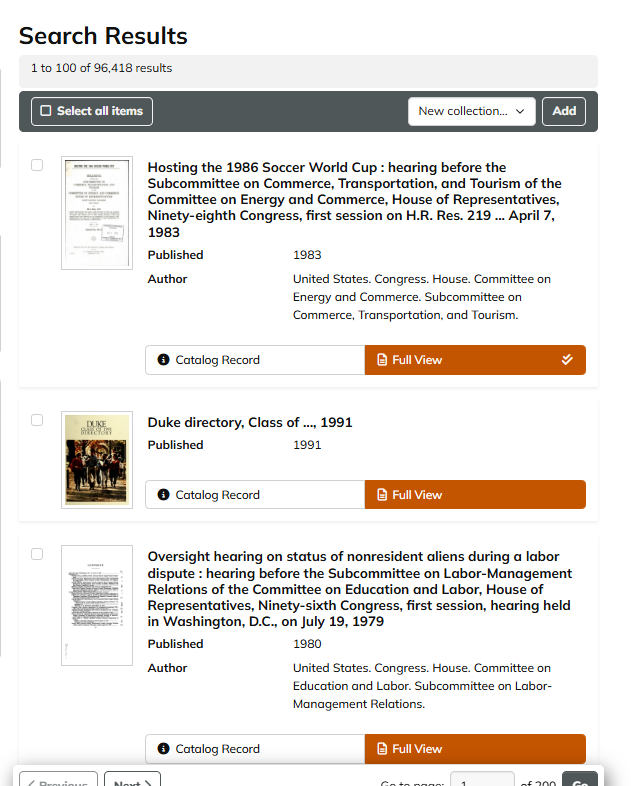
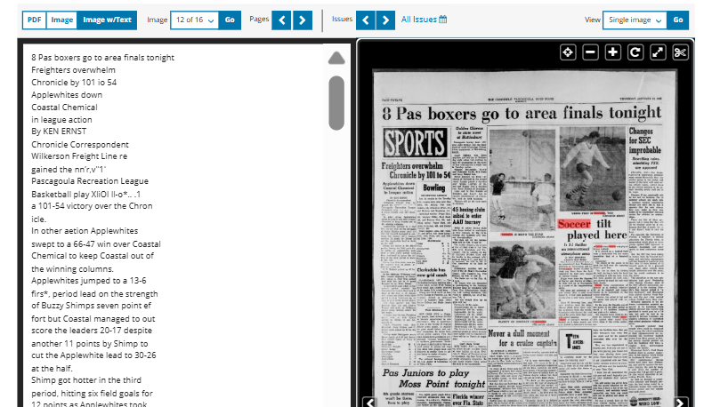
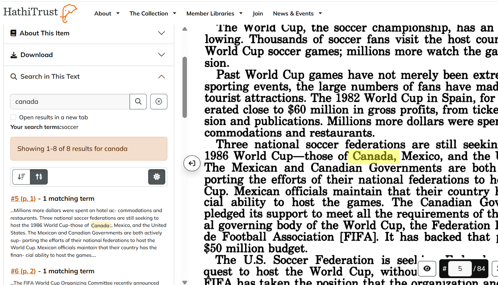
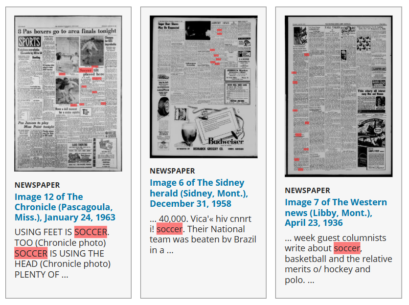
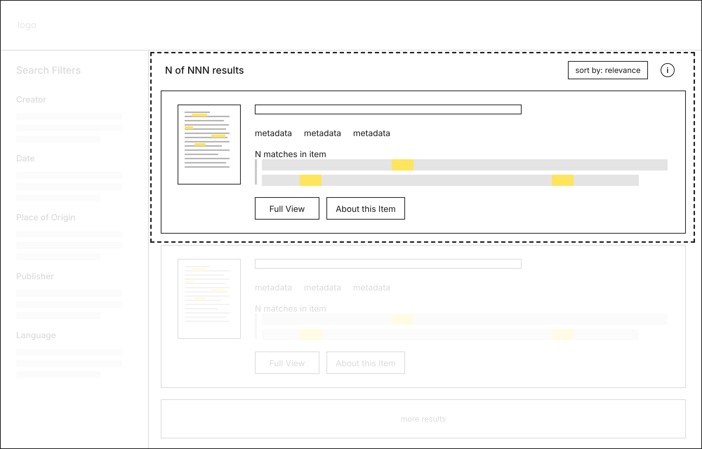
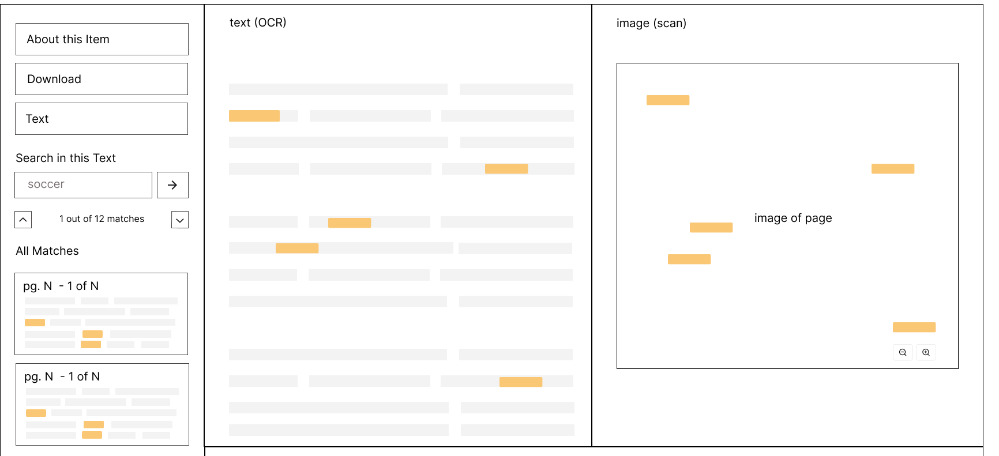
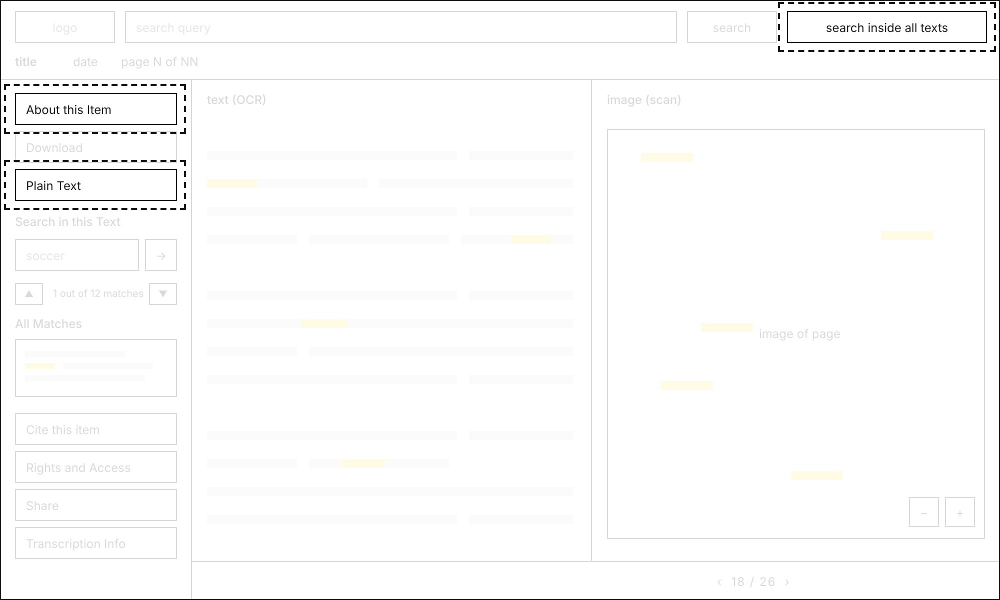
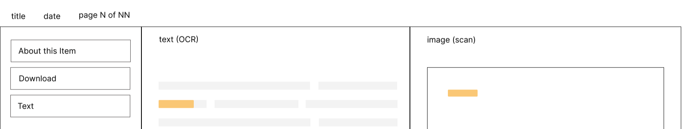

How do users search for specific keywords across a large volume of documents?
team
UX Research Intern Library Intern Sr. UX Researcher
my role
UX Research Intern
tools
Dovetail Figma
duration
2 months
quick summary
Harvard Library’s full-text search was limited, had few features and few users, and the team needed evidence on what works before redesigning it.
I led 11 moderated usability sessions with Harvard students on two mature platforms, Library of Congress and HathiTrust, then analyzed the sessions into six insights and six recommendations. I delivered actionable insights, lo-fi wireframes, and an evidence-based feature set. The UX & D team is moving forward with the redesign as part of their next large-scale initiative.
context
Imagine you’re researching a paper and need every source that mentions a specific word or phrase. With thousands or millions of documents, reading through them isn’t realistic. You need a search mode that looks inside the documents for you, with results clear enough to show which documents are worth opening.
Full-text search is a search mode for finding specific keywords inside large volumes of documents, similar to CTRL+F.
The bigger the collection, the more essential full-text search becomes. Harvard Library has 11.1 million digital items.
Harvard Library offered a basic version of full-text search on its site, but the version was limited. It had few features, was a standalone page, and, as a result, it had few users.
goal
Harvard wanted to redesign its full-text search experience, but first it needed a foundation of best practices from which to build from. The aim of this study was to understand how users search inside large collections of documents by testing two mature platforms, then translate what we learned into recommendations and wireframes.
How might we make Harvard’s full-text search easier to find, understand, and use?
key research questions
Do users understand what full text search is doing in the context of a general search?
What labels do they actually understand?
What makes a search result readable? What do users look at first, what do they ignore?
Can users complete key tasks associated with full text search (e.g. copy-paste, citations, rights & access).
who uses full-text search?
Anyone who searches Harvard Library’s collections, mainly students, faculty, and researchers at all levels (undergraduate, graduate, postdoc, and faculty), often to find sources for research. This study tested with Harvard students.
understanding the landscape
I compared the full-text search experience across three sites by examining different aspects, like features, display, and specific pages that were important to the full-text search experience. As I compared the three sites, I created a table comparing the features. Since we don’t have enough time for participants to complete usability tasks across three sites, the table I created helped me narrow it down to two of the platforms for usability testing — Library of Congress (LOC) and HathiTrust — chosen based on their contrasting features and fit with our research goals.
LOC and HathiTrust took different approaches to the same problems, which let each session test distinct search experience design bets.
Importantly, I decided we would test two parts of the search platforms: the search results page and the full view page. The search results page is what the user first encounters when searching for a term and the full view is the page the user encounters after clicking on a result. Both of these are crucial parts of the search experience.


Search Results: LOC & HathiTrust


Full View: LOC & HathiTrust
decision: benchmark instead of testing our own site
Why test other search platforms instead of evaluating our own? Harvard’s existing version had limited features and low usage, so testing it would have shown what was missing but not what works. Benchmarking mature platforms lets us see which design choices help users succeed, so the redesign could build on proven patterns.
research methods: usability testing
We ran 11 moderated usability sessions with Harvard students, asking each to complete key full text search tasks (searching, reading results, copy-paste, finding citation and rights info) across two live sites, LOC and HathiTrust. Each session lasted 30-45 minutes.
Example task: “Imagine you are doing research for a paper and you want to find materials that contain the word “soccer”. How would you do so within this website?”
*I counterbalanced the order in which participants used the two websites to mitigate ordering effects.
research analysis: affinity diagramming
Following usability testing, our team used Dovetail to code the transcripts by tagging data into buckets: positive, negative, behaviors, expectation, confusion, and observation. Then, we analyzed the tagged data and observations through affinity diagramming to identify major key findings.
key insights and recommendations
insight 01
Highlighting was the strongest signal that the search went inside the document.
Users didn’t actually understand what “full text search” meant on the search results page, but seeing the matched term highlighted showed them the search had gone inside the documents. Highlighting served as a visual cue :
Salient
Easy to quickly understand
When we asked users which site they preferred for full text search, most reported LOC over HathiTrust for this key reason.

insight 01 —> recommendation 01
So, highlight the matched term everywhere it appears on the result.
Highlight it in the thumbnail and the snippet, so the search type is obvious without having to read a label.
insight 02
People used peripheral cues to judge a result's relevance before clicking.
People made fast relevance judgements and valued cues on the result card that let them do it:
Number of matches for the search term
The thumbnail image
Clear title, author, and date
Users mentioned wanting longer snippets with the search word inside so they could better judge relevancy.
insight 02 —> recommendation 02
So, build the search result card to allow users to make quick relevancy judgements.
Include the match count, thumbnail image, and add a longer snippet that shows the term in context so people can judge a result’s relevance before opening it.
Users also wanted to understand and control the ranking to find relevant items quicker, so add a clear sort control and an info icon explaining how relevance is determined.

insight 03
Users liked HathiTrust's "Search in this Text" for in-document search.
What stood out to users:
Each match showed surrounding context, so people could gauge how relevant an excerpt was before clicking
Clearly labeled and easy to find in the sidebar
Also, users explained that they understood searching inside of a document as ctrl+f
insight 03 —> recommendation 03
So, add “Search in this Text” in the sidebar, with snippets and a Ctrl+F-style step-through to jump between matches.

insight 04
Labels that named an action or described what the user would receive were better understood.
Confusing: "Catalog Record" (people didn't expect it to lead to item info) and "Pages (Full Text)" (couldn't tell if it changed what was searched or what was shown)
Clear: "Full View", "Search in this Text", “Plain Text”. People understood because the label described what they'd get or what it would do.
Participants suggested fixes that reflected this idea — e.g. "Search inside the documents" in place of Full Text Search” or “Pages (Full Text)“
insight 04 —> recommendation 04
So, name the output instead of the system concept. Use "Search inside all texts," "Plain Text," "About this Item".

insight 05
Users didn't trust the transcribed text, so they avoided it.
The transcribed text had visible errors: broken structure, garbled characters. One participant called it "gibberish" and left before coming back to it.
The errors annoyed users and several doubted the search itself, wondering whether it had actually caught every instance of their term.
People referred back to the original document so they could check the transcribed text themselves before relying on it.
insight 05 —> recommendation 05
So, design to support text and image verification.
Ideally, we would improve the accuracy of the transcribed text, but we also recommend:
Keeping the scan beside the text so people can check a passage while they read the text.
Highlighting matches in both versions
Considering adding a transcription accuracy indicator in the sidebar with:
Explanation for how it works
Estimated accuracy
insight 06
Users couldn't copy text the way they expected, so they created complex, creative workarounds.
Nearly everyone tried to highlight and copy text from the viewer, and it didn't work.
When that failed, they improvised: downloading the entire file to copy from it, trying to copy from a sidebar snippet, and taking out their iPhone, photographing the screen, and extracting the digitized text from the photo.
The plain-text view that would have let them copy did exist but it was buried in an image-manipulation menu instead of the special-features sidebar where users expected.
insight 06 —> recommendation 06
So, move the plain-text view into the sidebar where people look and, if possible, make text selectable in the image viewer.

Hover or tap the numbered markers to read the research behind each decision.
impact
The UX & D team is moving forward with the search redesign as part of their next large-scale initiative.
Identified what works and what breaks in full-text search The redesign can now be built to support understandable labels, trustworthy results, and to support the key tasks that broke before, such as copy-paste, citations, and rights and access.
Shaped the roadmap for the full-text search redesign The study replaced internal assumptions about full text search user experiences with an evidence-based feature set.
Delivered lo-fi wireframes as a starting point for the redesign The team has wireframes and recommendations to build the real experience on top of.
learnings
Chase the "why" behind off-topic user feedback Sorting and relevance controls weren't a research goal, but participants kept bringing them up. I didn't understand why at first, so I coded them anyway and included them in my draft findings because so many people mentioned them. In review, our Sr. UX Research Lead cut them for being out of scope, which was a fair call.
After the Sr. UX Research Lead made the edits, I looked closer at the transcripts and realized the pattern: people weren't asking for a nice-to-have button, they wanted to understand what a results page was showing so they could judge relevance quickly, the same thing they did with match counts, snippets, and titles. I brought that back to them, and it became part of Recommendation 02.
Probe the contradictions during the session Some users would state during the usability testing session that they understood full text search, but then, when answering follow up questions or completing tasks, they would show confusion about what full text search was. Learning to weigh observed behavior over stated comprehension, and to probe those contradictions during the session, changed how I read and coded the sessions.
contribution
Led the user research: planning, script writing, recruitment, moderation sessions (5 out of 11), analysis, and deliverables.
Wrote the first draft of the usability script and the final report; incorporated team feedback to shape the final versions.
Created the lo-fi designs and annotations, iterated based on team feedback.